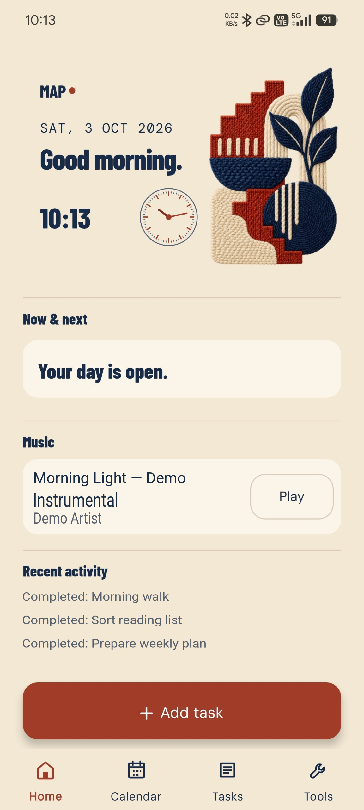
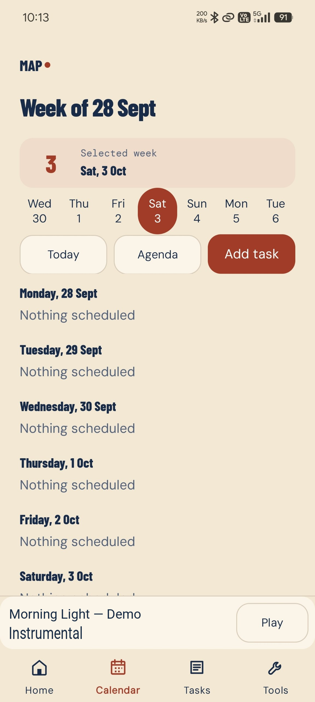
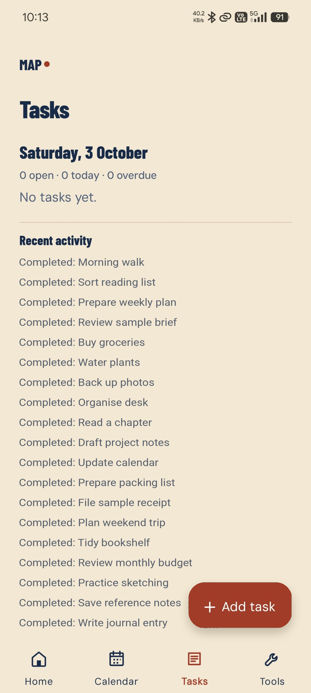
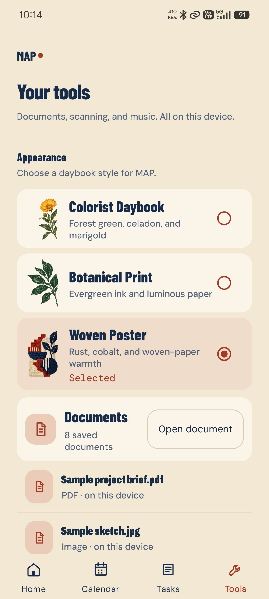

Procura
Inventory, suppliers, reorder planning and purchase orders in one connected application.
Procurement softwareView project: Procura
Keep everyday tools together, on your phone.
Tasks, calendar, documents, scan-to-PDF and local music in one personal Android utility.
Edited MAP phone screenshots; fictional demo text. Original app layout retained. Screenshot gallery only, not an interactive application.




Screenshot unavailable. Extract the complete preview ZIP with its assets, then reopen this page.
Everyday organisation can mean moving between unrelated tools—even when the task and the files are already on the phone.
I built MAP (My Awesome App) around a Home/Today view, with tasks and calendar scheduling, a document shelf, scan-to-PDF and local music. I use it on my own phone.
A native Kotlin Android app with on-device state. There is no account, backend, analytics or cloud sync. The source and sideload APK releases are available on GitHub.
View source on GitHub APK releasesThese owner-approved phone captures have fictional text substituted for private activity, filenames and music details. They are edited screenshots, not a populated demo installation. APK releases are debug-signed; this is personal-use software, not a claimed Play Store release or public-adoption result.
If this is close to a problem you have, describe the work—not just the features you want.
Discuss your project